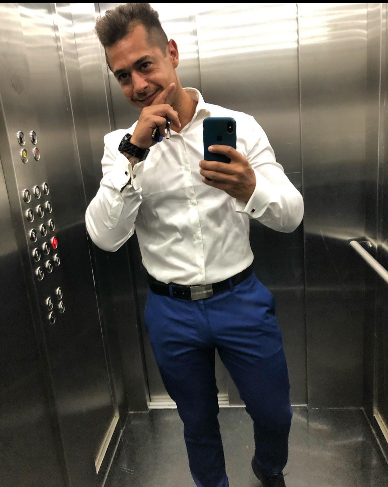

<!DOCTYPE html>
<html lang="en"></html>
<meta charset="UTF-8">
<head>
    <title> Curriculum Vitae Pablo Amico </title>
    <link rel="stylesheet" href="stylecv.css"/> 
</head>

<body>
    <header>
        
        <div>
        <h1>Curriculum Vitae</h1>
        <h2>Pablo Jeremias Amico</h2>
    </div>
    </header>
    <section>
        <article>
            <h3>Descripción personal</h3>
            <p>Administrador de empresas y sistemas administrativos, diseñador gráfico autodidacta, capacitado para manejo de grupos de trabajo y lider orientado a resultados, he gerenciado numerosas unidades de negocio y he relevado puestos en toda la cadena productiva en sectores comerciales tanto de productos como de servicios.</p>
        </article>
        <div>
            <h4>Educación</h4>
            <ul>
                <p>                Administración de empresas - Intituto Tec</p>
                <p>Diseño grafico - autodidacta - manejo illustrator, photoshop, adobe after effects</p>
                <p>Inglés, First certificate, Instituto Interchange</p>
                <p>Marketing digital, Brando Marketing Company</p>
                <p>Programación, inicial en curso, Soy Henry</p>    
            </ul>
        </div>
        <article>
            <h5>Experiencias Laborales</h5>
            <ul>
                <p>Telemarketer Bilingüe, T-mobile USA (Smart Acces Team), atención al cliente avanzado</p>
                <p>Banco Santa Fe, Administrativo Contable</p> 
                <p>Empresa de logística portuaria Magnus Trade Logistic, Administrativo contable, señior</p>
                <p>Brando Marketing Company, Gerente Producción, Junior </p>
                <p>Atomico Marketing Digital, Founder y Director de proyectos, equipo de 20 personal bajo scope of support</p>
            </ul>


            <h6>Skills</h6>
            <p>Mis skills refieren una mezcla integrada entre administración contable, software de diseño gráfico, habilidades comerciales adquiridas en empresas multinacionales, me define una fuerte inclinación hacia los resultados conseguidos de manera metódica desde un enfoque creativo para la resolución de problemas en el menor tiempo posible, manteniendo el standard productivo, he aprendido a adaptarme a una multiplicidad de situaciónes en donde el multitasking y un amplio scope of support me han enseñado a trabajar muy bien en equipo sin perder de vista los detalles individuales. Adquiri un manejo de tecnologias nativo e intuitivo y estoy en busca de mi próximo titulo, como programador para continuar  adquiriendo skills relevantes de cara al futuro y aportar mi experiencia al desarrollo profundo de nuevas herramientas que puedan aportar a la conformación de grandes estructuras económicas y comerciales.
            </p>
            <h7>
            Hobbies
            <p>Mis hobbies son: Entrenamiento de musculación en el gimnasio por 2 horas diarias para comenzar el día cerca de las 5 am, desayuno con mis mascotas y mi novia, suelo estudiar las primeras 4 horas inmediatas luego a mi desayuno, me tomo un break de una hora para almorzar y tener tiempo de calidad en casa con mi pareja, y por la tarde realizo actividades comerciales varias como la dirección de algunos proyectos relacionados al marketing en mi ciudad con algunas empresas de renombre, por la noche me gusta relajar quizas jugando algunos juegos online con amigos o mirar una serie en netflix en mi sala de estar para desconectar un momento antes de finalizar el día. Los fines de semana disfruto de salir al aire libre y navegar en el Río parana de mi ciudad con amigos para estar en contacto con la naturaleza.
            </p>
            </h7>

            <h8>Interés en mi carrera actual
            </h8>
            <p>Me encuentro en un etapa donde todos mis skills son convencionales y dificilmente se adapten a las tecnologías actuales si no logro integrarlas mediante el mainstream de la información disponible mundialmente. Debido a la creciente era de la tecnología, los lenguajes de información y la programación, busco continuar mi desarrollo profesional sumando skills que sean altamente requeridos en los futuros puestos de trabajo, para ocupar un rol multiplatadorma y en diversos espacios de los recursos humanos dentro de las multinacionales, en mi visión del futuro entiendo que debo formarme como un personal impresindible dentro de mi grupo de trabajo para poder lograr un crecimiento tanto académico como profesional y así evitar trabas en el camino de mi desarrollo. Mas adelante aspiro a poder tener un poder analítico en las áreas más importantes de una empresa, el administrativo, el comercial y el desarrollo de plataformas para poder tener un panorama completo y ser capaz de dar una mirada innovadora a la hora de tomar decisiones escenciales para el futuro de mi equipo de trabajo.</p>

  
        </article>
       <aside></aside>
    </section>


</body>